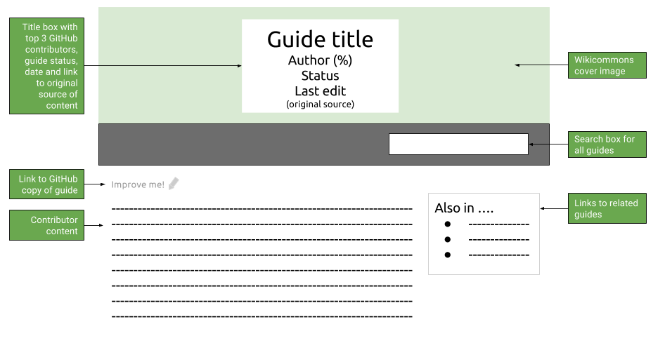
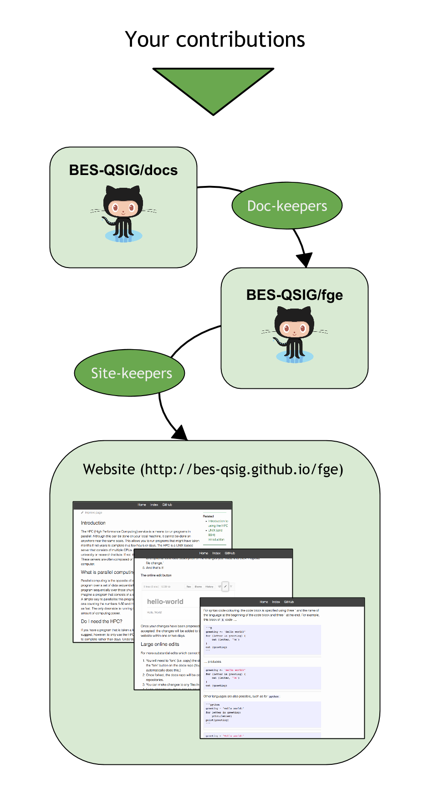

{% comment %}
  Count numbers of docs etc. using yaml and liquid
{% endcomment %}
{% assign ndoc = 0 %}
{% for theme in site.data.docs %}
  {% assign ntheme = forloop.length %}
  {% for doc in theme.docs %}
    {% assign theme_ndoc = forloop.length %}
  {% endfor %}
  {% capture ndoc %}{{ ndoc | plus:theme_ndoc }} {% endcapture %}
{% endfor %}
{% for cntb in site.data.github %}
  {% assign ncntb = forloop.length %}
{% endfor %}

<div class="grid">
    <div class="unit two-thirds">
        <h1>Welcome!</h1>
        <p>
          <b>Field Guides for Ecologists</b> (FGE or "fi&#183;ji&#183;") is
          an online platform of notes, guides, documents and resources written
          by ecologists on doing things <i>computational</i> and
          <i>quantitative</i> in ecological research. Example topics covered by
          FGE include IBMs, SDMs, R, python, Bayesian statistics, UNIX,
          git, GLMs, MCMC, reproducibility, package creation and
          distribution, parallel computing, autocorrelation, meta-analyses
          .... and more!
        </p>
      </div>
      <div class="unit one-third">
        <hr class='doc-bar'>
        <h3>Features include</h3>
        <ul>
          <li>
            Code syntax highlighting
          </li>
          <li>
            Simple mark-up script
          </li>
          <li>
            Version control
          </li>
          <li>
            Ordered by theme
          </li>
          <li>
            Automatic authorship contributions
          </li>
        </ul>
        <hr class='doc-bar'>
        <h3>Current status</h3>
        <ul>
          <li>
            {{ ndoc }} guides
          </li>
          <li>
            {{ ntheme }} themes
          </li>
          <li>
            {{ ncntb }} contributors
          </li>
        </ul>
        <hr class='doc-bar'>
        </div>
      <div class="unit whole">
      <h2>A guide to guides</h2>
        <p>
          Guides are written by contributors and stored in our GitHub repository.
          The documents are parsed and displayed on this website with proper
          attribution and links to related guides. See the index for a full list
          of currently available guides (and their status).
        </p>
        
      </div>
      <div class="unit two-thirds">
        <h2>How it works</h2>
          <p>
            We take contributions from anyone on our GitHub
            <a href="https://github.com/BES-QSIG/docs"> /docs </a> repository.
            These can be corrections, additions or new documents. These are
            then processed by volunteers called doc-keepers, who will accept
            your changes. A site-keeper will then upload the changes to this
            website.
            </p>
            
      </div>
      <div class="unit one-third">
        <hr class='doc-bar'>
        <h3>Why do this?</h3>
        <p>
          Researchers are increasingly needing computational and
          quantitative skills.
          We hope this platform will act as a noticeboard to share knowledge,
          ideas and experience.
        </p>
        <hr class='doc-bar'>
        <h3>Who did this?</h3>
          <p>
              This site was built by the
              <a href='http://www.britishecologicalsociety.org/'>
                  BES</a>'s
              <a href='https://besquantitativeecology.wordpress.com'>
                  Quantitative Ecology specialist interest group</a>.
              It was built using <a href='http://jekyllrb.com/'>
                  Jekyll</a> and is hosted on
              <a href='https://github.com/'>
                  GitHub</a>.
          </p>
        <hr class='doc-bar'>
        <h3>Help out!</h3>
        <p>
            This is still a nascent project and we're looking for
            many more contributions. We welcome guides linked from personal webpages.
            To learn how to contribute please visit our
            guide on contributing:
            <a href="http://bes-qsig.github.io/fge/docs/how_to_contribute/">
                How to contribute
            </a><br><br>

            We're also looking for more doc-keepers, so if you know anything
            about GitHub, please get in touch through our
            <a href="mailto:{{ site.email }}"> email</a>.
        </p>
        <hr class='doc-bar'>
  </div>
</div>
